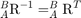
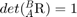
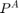

Homework #1
Miguel Angel Bermeo Ayerbe
Contents
Given a transformation matrix:
A_B_T = [ 2^(-1/2) 0 2^(-1/2) 1 ;... -1/2 2^(-1/2) 1/2 2 ;... -1/2 -2^(-1/2) 1/2 3 ;... 0 0 0 1 ]
A_B_T =
0.7071 0 0.7071 1.0000
-0.5000 0.7071 0.5000 2.0000
-0.5000 -0.7071 0.5000 3.0000
0 0 0 1.0000
1. Shows that is a rotation matrix
Since its the three columns are orthogonal, then a consequence of this is that:
 and 
A_B_R = t2r(A_B_T) A_B_R*A_B_R' det(A_B_R)
A_B_R =
0.7071 0 0.7071
-0.5000 0.7071 0.5000
-0.5000 -0.7071 0.5000
ans =
1.0000 0 0
0 1.0000 0.0000
0 0.0000 1.0000
ans =
1.0000
2. What is the meaning of columns and rows of and
: Each column is a vector in the order X, Y and Z, and the components of any vector are simply the projections of that vector onto the unit directions of its reference frame : This means that the components of  have numerical values that indicate distances along the axes of {A}
3.
B_P = [ 4 5 6 1 ]'; A_P = A_B_T*B_P
A_P =
8.0711
6.5355
0.4645
1.0000
4.
A_P_1 = [ 4 5 6 1 ]'; T = A_B_T; A_P_2 = T*A_P_1
A_P_2 =
8.0711
6.5355
0.4645
1.0000
5.
B_A_T = inv(A_B_T)
B_A_T =
0.7071 -0.5000 -0.5000 1.7929
0.0000 0.7071 -0.7071 0.7071
0.7071 0.5000 0.5000 -3.2071
0 0 0 1.0000
6.
betha = atan2(-A_B_R(3,1),sqrt(A_B_R(1,1)^2+A_B_R(2,1)^2)) alpha = atan2( A_B_R(2,1)/cos(betha),A_B_R(1,1)/cos(betha)) gamma = atan2( A_B_R(3,2)/cos(betha),A_B_R(3,3)/cos(betha)) my_xyz_fangle = [gamma betha alpha] xyz_fangle= tr2rpy(A_B_R) R = rpy2r(xyz_fangle(1), xyz_fangle(2), xyz_fangle(3)) A_B_R [theta, v] = tr2angvec(A_B_R)
betha =
0.5236
alpha =
-0.6155
gamma =
-0.9553
my_xyz_fangle =
-0.9553 0.5236 -0.6155
xyz_fangle =
-0.9553 0.5236 -0.6155
R =
0.9999 0.0106 0.0093
-0.0107 0.9998 0.0166
-0.0091 -0.0167 0.9998
A_B_R =
0.7071 0 0.7071
-0.5000 0.7071 0.5000
-0.5000 -0.7071 0.5000
theta =
1.0961
v =
-0.6786 0.6786 -0.2811
7.
A_B_r1 = A_B_R(:,1)
A_B_r2 = A_B_R(:,2)
A_B_r3 = A_B_R(:,3)
norm(A_B_r1)
norm(A_B_r2)
norm(A_B_r3)
%[vectors,values] = eig(A_B_R)
[theta, v] = tr2angvec(A_B_R)
A_B_r1 =
0.7071
-0.5000
-0.5000
A_B_r2 =
0
0.7071
-0.7071
A_B_r3 =
0.7071
0.5000
0.5000
ans =
1
ans =
1.0000
ans =
1
theta =
1.0961
v =
-0.6786 0.6786 -0.2811
8.
gamma = tr2eul(A_B_R)
gamma =
0.6155 1.0472 -0.9553